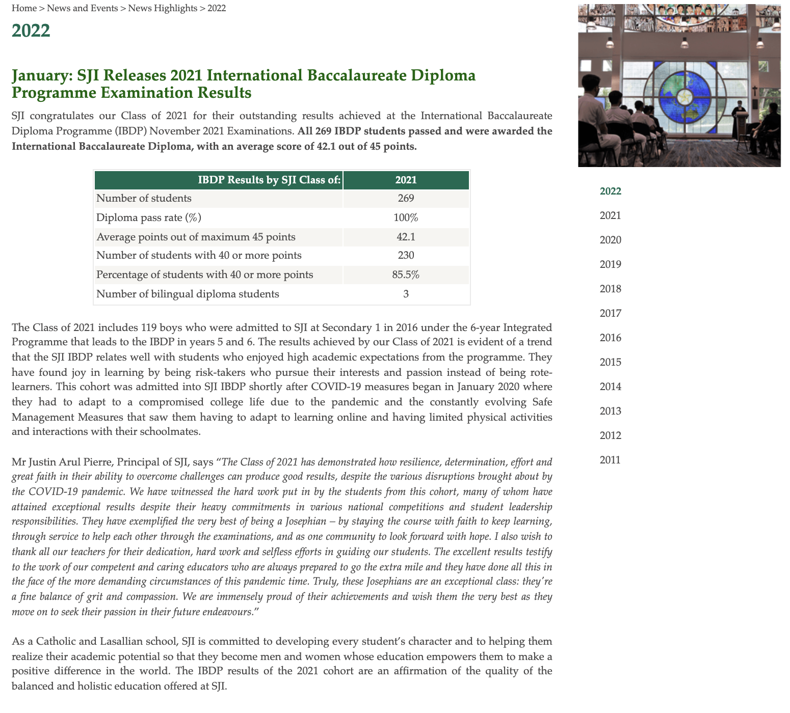

Home
Learning Minds
Caring Hearts
Transforming Lives
Admission
Webinar
Testimonials
Student Life
Virtual Tour
SJI in the news
Subjects
SJI in the news
Click the image below for 2022 news

SJI News and Highlights (2021)
Read More
St. Joseph's Institution
Discover SJI at: 38 Malcolm Road, Singapore 308274 •
www.sji.edu.sg
•
Facebook
•
Instagram
Copyright © All Rights Reserved 2022
This website was programmed by SJI's Coding and Technology CAS, together with Photography CAS, Film CAS and the Student Council.
Coding and Technology CAS
- Terence Teo, Tristan Tay, Alexandre Balon, Wu Yonggang, Pauline Ongchan, Althan Ng, Disha Harish, Audrey Loke, Benedict Chua, Yu HuaJia, Mohammed Iqbal, Renee Yong, Manami Sivasubramanian
Photography CAS - Vivienne Ho, Ng Yun Hui, Keerthana Bijunair, Rohan Varatharajan, Briceton Ng, Sarah Tan, Ernest Chia, Huong Viet Giang Huong
The Student Council - Chen YuYao, Koon Wei Pheng, Colin Toh, Su Myat, Stephanie Lim
Film CAS - Hannah Wong, Natasja Silva, Matthew Koh, Brien Chia, Russell Lee
All photos and footages were taken before the pandemic or with necessary SMM measures in place.